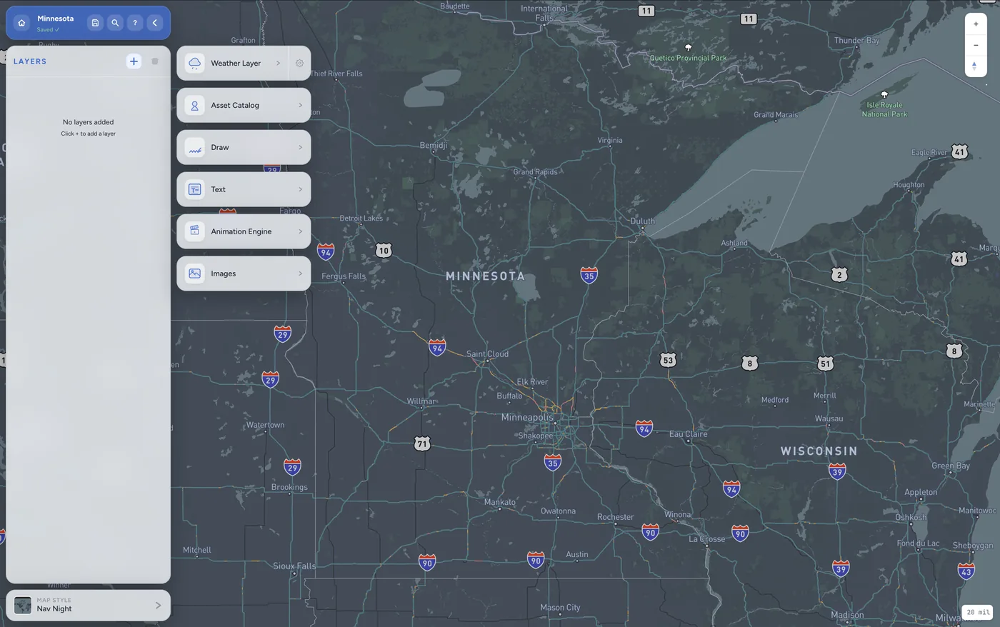

Graphics editor, weather layer panel with radar, satellite and observation options
Export
4K
MP4 · PNG · JPG
Data layers
40+
radar · sat · obs
Streaming
OBS
vMix · virtual cam
01What it does
Users build a weather graphic by stacking layers onto a Mapbox map, live radar, multi-spectral satellite (infrared, visible, water vapour, GeoColor), surface temperatures, dew points, wind speeds with particle animation, then annotate with draw tools, text labels, and meteorological symbols. The animation engine sequences through time steps. The result exports to MP4 at up to 4K, or streams live via a virtual camera to OBS or vMix for broadcast.

Layer system, Weather, Assets, Draw, Text, Animation Engine, ImagesTime range controls, live to ±7 day forecast, per-layer interval and frame fetch
Virtual camera output compatible with OBS and vMix. Automated city slide templates with live data updates.
03Stack
No framework, vanilla JS modules with a hand-rolled project state store. Frontend deployed to AWS CloudFront. All persistence through Supabase (auth + project saves). Stripe handles subscriptions.